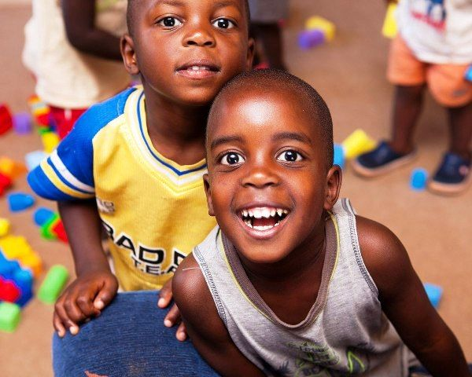
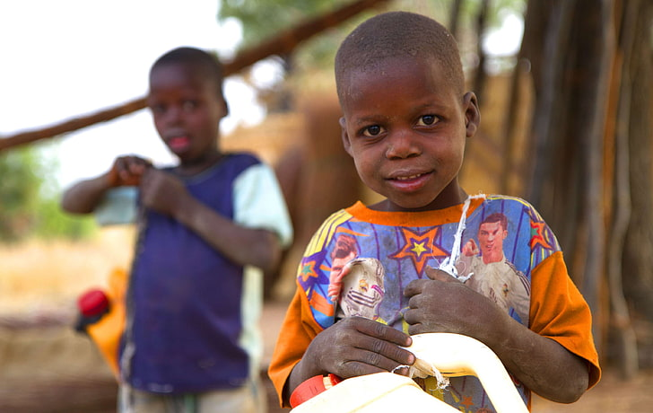
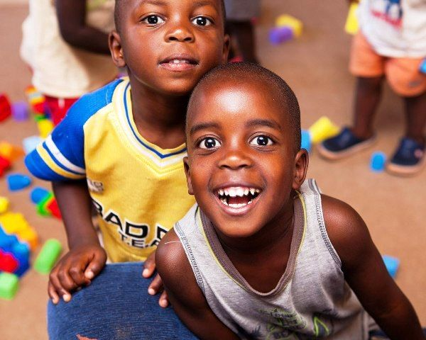
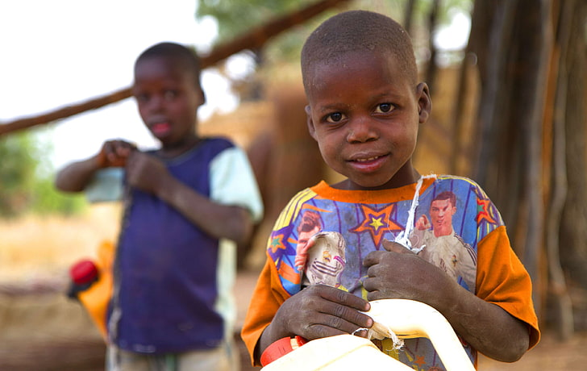

Community
Urban Nairobi
We serve in a network of urban slums in the capital city of Kenya.These unplanned developments cover less than three square miles and have a total population of more than one million. The largest area is called Mathare. Families generally live in 10’x10′ shanties made from tin, wood, cardboard and mud. The floors are dirt. There is no running water or electricity in homes. A river of sewage runs through the slums where people dispose of waste. People survive on less than $2 a day, leaving their homes each morning to search for work to support their families. Most households are headed by single mothers. In addition to their own children, they often care for the relatives or other orphans who have no place to live.

Our Focus
In keeping with the goal of creating sustainable development, the projects are run mostly by local individuals appointed by the organisation, which largely helps us to focus more on helping people in the community.

Achieving Goals
To achieve its goals, Vision Hope, apart from private donors, relies also on the support of institutional donors, including the World Food Program (WFP), the World Health Organization.

Volunteer
Help us out with your skills – nothing can stop you – volunteering is possible globally! Are you a creative talent? Do you enjoy writing articles or editing videos? Or do you enjoy working with kids? Have a look at our open volunteering positions.

Job openings
Are you a newcomer in the humanitarian field or already well experienced in working for international humanitarian or development organizations? We are constantly looking for national and international staff.
Fundraise
Help spread the word about our fundraising projects. Support one of our current calls for action, or get started yourself. Organize a charity event, activate your friends and family, or simply support us via social media!
Donate
Not only are we thankful for any contribution, but the people we serve are glad to receive your support. From a small contribution to a monthly donation, every financial support is needed and indispensable. Check out our personal stories to find out who you supported!
Rural Kenya
Outside of Nairobi, we serve in several remote, rural villages. Most families tend livestock to earn a living, and the arid climate produces long periods of drought and food shortages. On average, 85% of people living in these areas are extremely impoverished, and a very small percentage are literate. Access to quality education and gainful employment is extremely limited. Early marriage and traditional gender roles (girls working at home and boys working in the family trade) prevent most kids from attending school. Unreached People Groups As our vision grows, we’re expanding to rural communities that are predominantly Muslim or traditional African cult religions to share the hope of the Gospel.

Do you want to be even more successful? Learn to love learning and growth. The more effort you put into improving your skills, the bigger the payoff you.
Mary maina
supervisor at Oracom
A purpose is the eternal condition for success. Every former smoker can tell you just how hard it is to stop smoking cigarettes. However.
Joffery mwangi
Head of children ministry

About us
Every single day, support for the most vulnerable in our communities
is needed. We, hope restoration invest in a future with a life of dignity for everyone
Copyright © All rights reserved | This template is made with by hope restoration
Newsletter
Stay updated with our latest events
Follow us
Let us be social
 


